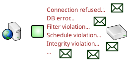

Contents
Contents  stalecursors | events
stalecursors | events 
Notifications
Notifications allow the SQL Relay server programs to notify recipients when a specified set of events occur.

Notifications are implemented by loadable modules. The notifications section of the configuration file indicates which notification modules to load and what parameters to use when executing them.
<?xml version="1.0"?> <instances> <instance ...> ... <notifications> <notification module="events"> <events> <event event="db_error"/> <event event="db_warning"/> <event event="filter_violation"/> </events> <recipients> <recipient address="dev@firstworks.com"/> </recipients> </notification> </notifications> ... </instance> </instances>
The module attribute specifies which module to load.
Module configurations may have attributes and/or nested tags. How these are interpreted is module-specific.
All notification modules have an enabled attribute, allowing the module to be temporarily disabled. If enabled="no" is configured, then the module is disabled. If set to any other value, or omitted, then the module is enabled.
Notification modules can be "stacked". Multiple different modules may be loaded and multiple instances of the same type of module, with different configurations, may also be loaded.
<?xml version="1.0"?> <instances> <instance ...> ... <notifications> <notification module="events"> <events> <event event="db_error"/> <event event="db_warning"/> <event event="filter_violation"/> </events> <recipients> <recipient address="dev@firstworks.com"/> </recipients> </notification> <notification module="events"> <events> <event event="integrity_violation"/> </events> <recipients> <recipient address="dba@firstworks.com"/> </recipients> </notification> </notifications> ... </instance> </instances>
At startup, the SQL Relay server processes create instances of the specified notification modules and initializes them. As events occur, the server passes the event and, optionally, a string of information about the event to each module, in the order that they were specified in the config file. If a module is listening for that event, then it sends a notification to the specified recpients.
Currently, the following notification module is available in the standard SQL Relay distribution:
Custom modules may also be developed. For more information, please contact dev@firstworks.com.